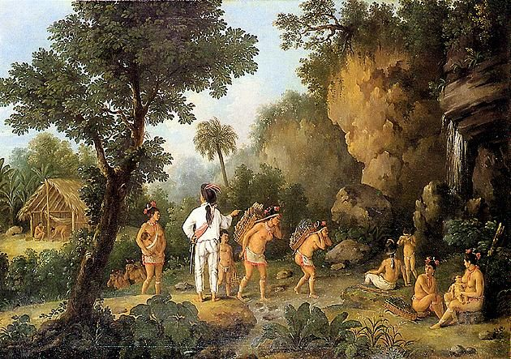
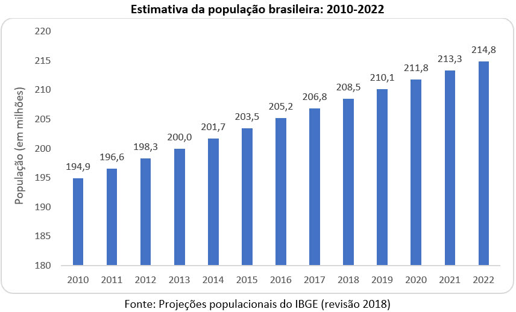
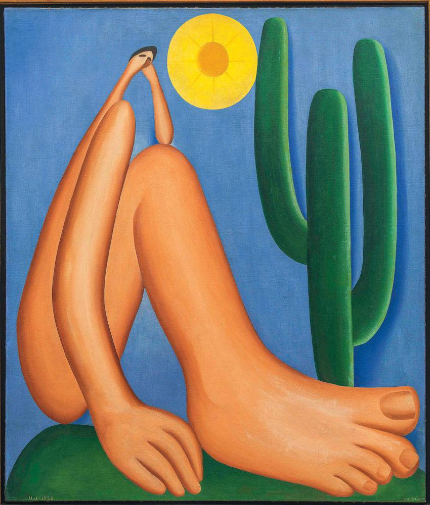

Geografia
O Brasil é o maior país da América do Sul, com clima tropical predominante e uma diversidade enorme de paisagens.

História
Desde a colonização até os dias atuais, o Brasil tem uma história rica e diversa, com influências indígenas, africanas e europeias.
Português
O Brasil é o único país da América do Sul com o português como língua oficial. A literatura brasileira reflete a diversidade cultural do país.
Matemática
População aproximada: 215 milhões (2025). O Brasil é a 9ª maior economia do mundo.
Ciências
A biodiversidade brasileira é uma das maiores do planeta, incluindo a Floresta Amazônica, Pantanal e Mata Atlântica.

Artes
O Brasil tem uma rica expressão artística, com música, dança, arquitetura colonial e contemporânea.
Educação Física
Futebol é o esporte mais popular, mas o Brasil também se destaca em vôlei, capoeira e esportes aquáticos.
Inglês
Curiosidades: Alguns termos do português brasileiro têm origem indígena, africana e inglesa.
- Hello = Olá
- Thank you = Obrigado
- Soccer = Futebol
Filosofia e Sociologia
O estudo da sociedade e da ética ajuda a entender como o Brasil se desenvolve cultural e socialmente.
Economia
O Brasil tem uma economia diversificada, com destaque na agricultura, indústria e serviços.
Tecnologia da Informação
O avanço da informática e da internet transformou a educação e a forma como o Brasil se conecta ao mundo.